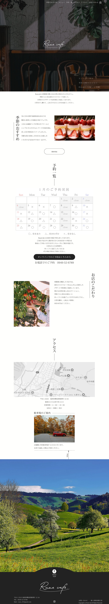
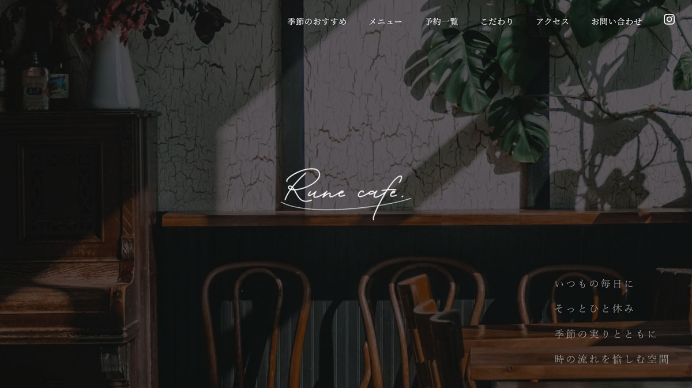

Website ｜ 自主制作
Rune cafe
「飲食店サイト」をテーマに、果樹園の隣にある自然に囲まれた小さなカフェのHPを制作しました。
木々や季節の果実に囲まれた、ゆったりとした時間が流れる空間の魅力が伝わるよう意識しています。ほっとひと息つける居心地のよい場所であることを感じていただけるデザインを目指しました。

ペルソナ
仕事の繁忙期を乗り越え、ようやくひと息つける時間ができた20代後半の女性。
久しぶりのまとまった休日に、自然の中でゆっくり過ごせるカフェを探している。
久しぶりのまとまった休日に、自然の中でゆっくり過ごせるカフェを探している。
クライアントの悩み
季節ごとに変わるパフェの情報をわかりやすく伝えたい。
人気が高まり来店が増えてきたため、混雑状況を共有し、スムーズに予約できるようにしたい。
人気が高まり来店が増えてきたため、混雑状況を共有し、スムーズに予約できるようにしたい。
目的
季節のパフェの情報を掲載する。
予約状況を共有し、駐車場の情報もわかりやすく載せる。
予約状況を共有し、駐車場の情報もわかりやすく載せる。
情報設計のこだわり
お客様が最も知りたい季節限定メニューの情報をファーストビュー付近に配置し、その後に予約状況や来店に必要な情報へ自然につながる導線を意識しました。
また、課題の条件としてflexやgridを使用せずに制作する必要があったため、限られた中でも違和感のない、見やすく整ったレイアウトを心がけました。
デザインのこだわり
ヒーローエリアでは、大人の隠れ家のような落ち着いた印象を感じていただけるよう、写真選びとキャッチコピーにこだわりました。
自然に囲まれた立地の魅力が伝わるよう、木々や周囲の風景も大きく取り入れています。
また、見出しを縦書きにすることで視線が流れるように移動し、和の趣や静かな空気感が伝わるデザインを意識しました。
制作期間
企画1週間
デザイン1週間
コーディング1週間
使用ツール
canva | Photoshop | illustrator | SublimeText
